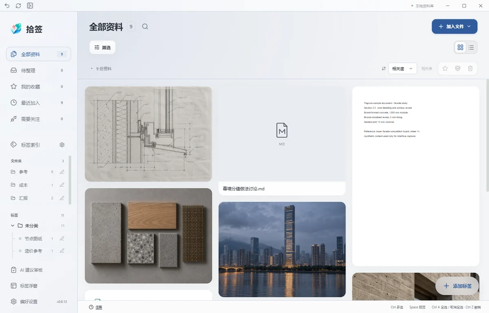
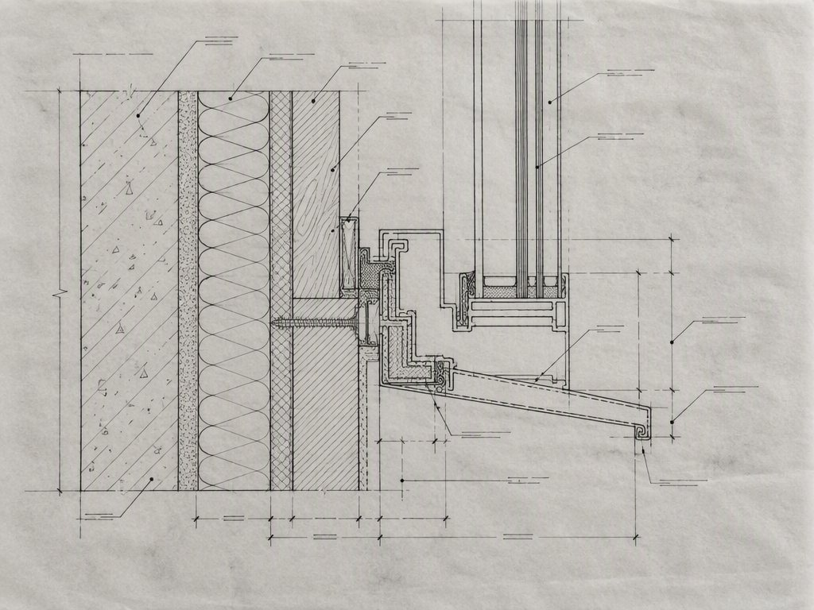
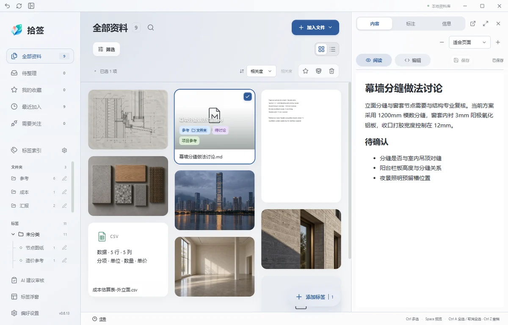
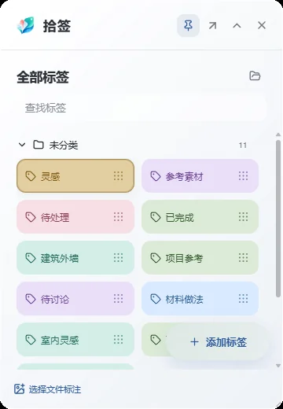
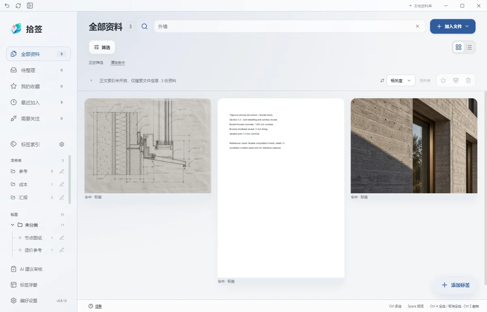
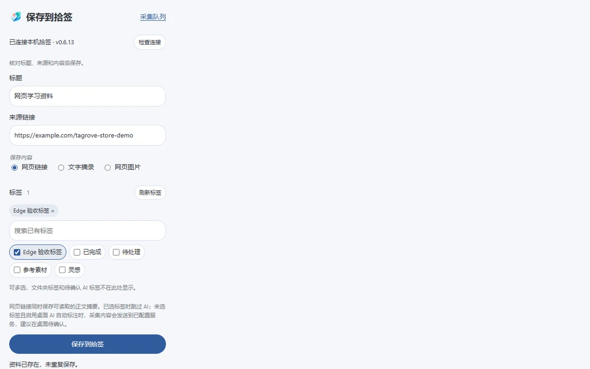
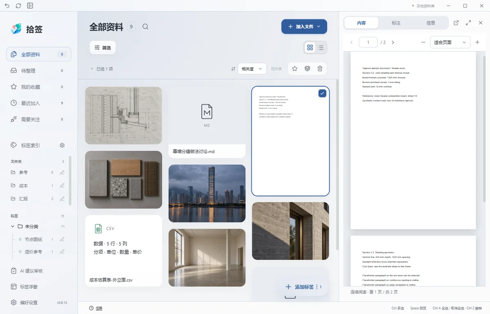
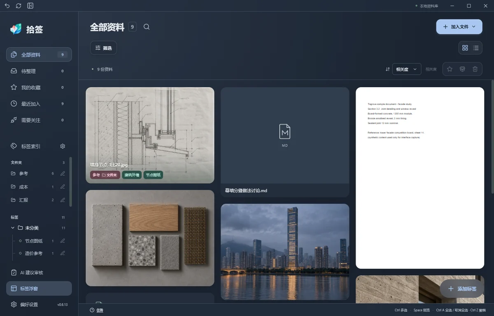

大图瀑布流，一眼看到内容Workspace
图片、PDF、网页资料混排在同一面墙上。列数、列宽、侧栏与详情宽度都能调整，收藏、备注和来源信息就在手边。
- 瀑布流与列表两种布局，Ctrl＋滚轮调整列数
- 点击文件展开右侧详情，再次点击收拢
- 待整理、我的收藏、最近加入、需要关注分组入口

Tag it now. Find it when it matters.
整理本地文件、图片与网页，让参考资料重新派上用场。
A local workspace for files, images and web references.
未分类11
添加标签

方案文本-初稿.pdf
52.3 MB · 2024.10.12
成本估算表.xlsx

网页摘录 · 已保留来源地址
塔楼立面如何回应城市界面
采集时选中的段落，连同原文网址一起留在资料库里，之后能回到出处。

同一张效果图可以同时属于「项目参考」「建筑外墙」和「待讨论」；一份 PDF 可以与网页摘录、图片放在同一组搜索结果中。整理与找回围绕用途展开，不必为了分类反复复制文件。Keep files where they belong; connect them with tags.
加入资料库时，原件通常留在原来的路径。你在原来的工具里继续编辑它，拾签只负责贴上标签、记录来源；原件被移动后重新关联即可。
普通标签与文件夹自动标签分开管理；标签支持别名、颜色、合并与重命名同步，Ctrl＋点击多选后可批量标注。分类不再靠复制文件实现。
搜索名称、标签、别名、备注和已索引正文，结果显示命中在哪里，而不是只给一个文件名。Search results show why each item matched.

从导入到阅读，从网页采集到交给同事，拾签把散在文件夹、硬盘和浏览器标签页里的东西接成一套。
图片、PDF、网页资料混排在同一面墙上。列数、列宽、侧栏与详情宽度都能调整，收藏、备注和来源信息就在手边。

桌面浮窗默认显示全部普通标签，可分类展开、搜索、用九宫格手柄排序或跨分类整理。把标签拖到文件上，或把一批文件拖进标签，动作在同一个手势里完成。

想不起文件名也没关系。名称、标签、别名、备注和已索引正文一起参与检索，可选的语义补充排在后面；每条结果说明它为什么被找到。

Chrome 与 Edge 扩展保存当前网页、选中文字或图片，先预览、再挑标签、后入库。在线阅读或保留采集副本，来源地址始终可追溯。

图片以鼠标为中心缩放；PDF 连续阅读并支持文字层选取；Markdown 可读写回原文件；本地 HTML 提供静态与源码两种视图。Office 文档可调用本机 Microsoft Office 或 WPS 生成原排版。

AI 标注与语义检索是两个独立的可选服务。AI 建议要先经你审核，确认后才进入普通标签池；语义检索需要支持 Embeddings 的模型。开启前请核对服务地址、模型、密钥与发送范围，分析内容会发送到你所配置的服务，可能计费。
界面示意 · AI 建议面板的结构化草图，非真实模型输出
项目要换人接手时，最麻烦的不是文件本身，而是标签、备注和来源能不能一起过去。含原件的资料包让另一台电脑导入后，仍能看到原来的分组。Hand over files with their tags, notes and sources.
核对范围与数量，决定是否需要连原件一起打包。
压缩包可以走任何一条你已经在用的传输渠道。
同名冲突会提示处理，不会静默覆盖已有资料。
文件夹、数量、标签与原件能否打开，逐项确认后再收尾。
| 交付内容 | 里面有什么 |
|---|---|
| 程序或安装包 | 装上软件，不包含你的文件或标签。 / Installs the app; does not carry your library. |
| 标注备份 | 恢复资料库信息；普通原文件不在其中。 / Restores library metadata, not the originals. |
| 含原件资料包 | 跨电脑交接文件、标签、备注等资料，导入时按原来的父文件夹落地。 / Transfers files and annotations between computers. |
默认群青。个人标签配色独立保留，换主题不会把已经染好的标签一起改掉；字号也可整体调整。
中文／English · 浅色／深色 · 字号调整 · 默认主题色为群青

这些不是免责声明，而是当前版本的真实状态；如果你要在同事电脑上安装，请先看完这一屏。
公开下载，附校验文件。升级前导出标注备份，重要原件另行备份；完全退出旧版后再安装。